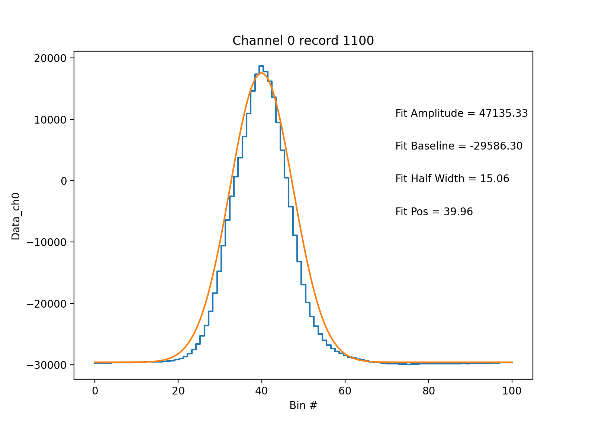

Processing raw SP2 files#
The SP2 outputs .sp2b files that contain the waveforms in each channel for each particle that is recorded. In addition, the SP2 also has .ini files that store the probe configuration and .hk files that contain the SP2 housekeeping information. In order to ultimately obtain processed SP2 data, all three of these files are needed. For the first step where we process the raw SP2 waveforms, we simply need the .sp2b files.
Processing a raw .sp2b file is as easy as:
waveforms = pysp2.io.read_sp2b(file_name)
Where file_name is the name of the file you want to read. The output is an xarray Dataset containing the waveforms in each channel for each particle. The “Data_chx” fields in the dataset contain these waveforms.
The next step is to generate the particle waveform statistics for processing. This includes processing the peaks, half widths, and amplitudes of each wave. This information is subsequently used to estimate particle sizes and masses. For this step, you will also need the path to your dataset’s .INI file for necessary probe configuration parameters. In order to calculate the particle waveform statistics, do:
my_config = pysp2.io.read_config(path_to_ini_file)
waves = pysp2.util.gaussian_fit(waveforms, my_config)
Finally, once these statistics are generated, you can view the waveforms with a simple built-in visualization technique. In order to, for example, view the ch0 waveform for the 1100th particle in the dataset, one can simply do:
pysp2.vis.plot_wave(my_sp2, 1100, 0)
You will get a plot like below. If you are making a plot from the scattering channels (usually 0, 4), the Gaussian fit to the curve will also be plotted.
